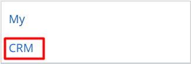
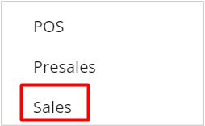
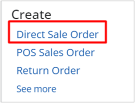
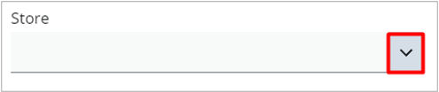
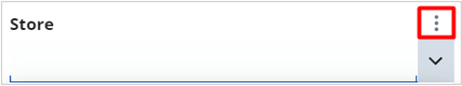
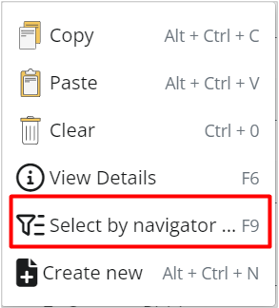
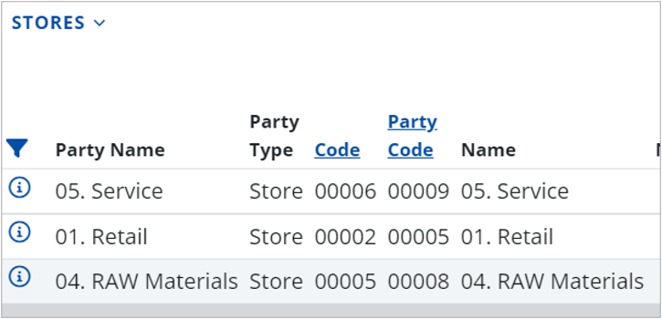
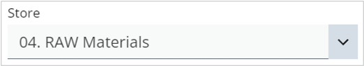

How to use the Select by navigator option
Upon clicking a field that has а drop down option menu, for example the Sales Person field in Sales, a three point button will visualize and open the drop down menu itself.
The Select by navigator option allows you to easily access all data related to a certain field by clicking just a few buttons.
In this way, you can complete a form just by choosing from a list of options the one that contains exactly what you need.
Once you confirm the selection of the needed data, it will be automatically filled on the main page.
Example use-case
- To begin the process, choose a section from the menu (e.g. CRM).

- From the sub-menu that appears underneath, click on a corresponding subsection (e.g. Sales).

- We want to create a direct sale order.

- On the respective page, you can see one or more drop down fields.
To access the Select by navigator option and the available features that come with it, click the downward chevron button.

- A vertical three-point button will appear right above the chevron button.

- By clicking on it, you expand a menu from which you can choose Select by navigator.

This takes you to a new page where you can see all of the field's available data.
The navigator responsible for containing this type of data will be opened in Select mode and the button for selecting information will be visualized based on the option you select.

- After choosing an option, click on the Select button which will match your choice.
The button is located on the bottom right side of the page. If you make a change to the selected option, the button's text will reflect it.
- After selecting and confirming your choice, you will return to the original form (e.g. direct sales order).
The data you've selected will be filled in the respective drop down field.
